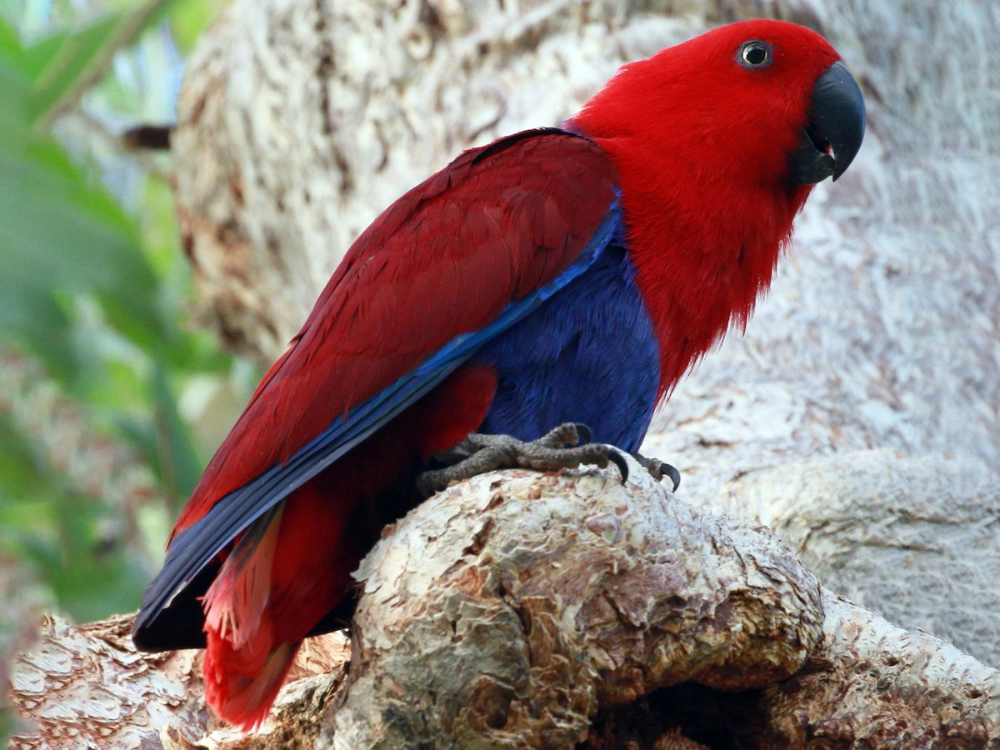

Electus papağanı (Eclectus roratus), Avustralya’nın kuzey bölgeleri ile Papua Yeni Gine ve çevresindeki adalara özgü, göz alıcı renkleri ve dikkat çekici cinsiyet farklılıklarıyla tanınan bir papağan türüdür. Ortalama 35–40 cm uzunluğa ulaşabilen bu kuşlar, papağan dünyasında “cinsel dimorfizm” açısından en belirgin örneklerden biridir: erkek bireyler parlak yeşil tüyleri ve turuncu gagalarıyla dikkat çekerken, dişi bireyler kırmızı ve mor tonlarındaki tüyleriyle adeta farklı bir tür gibi görünür. Güçlü gagaları sayesinde sert kabuklu yemleri kolayca kırabilir, doğal ortamlarında meyve, tohum, çiçek ve nektarla beslenirler. Zekâları ve öğrenme yetenekleri sayesinde insan seslerini taklit edebilir, basit kelimeleri öğrenerek iletişim kurabilirler. Sosyal ve oyuncu yapılarıyla sahipleriyle güçlü bağlar kuran electus papağanları, yalnız bırakıldıklarında huzursuz olabilir ve bu nedenle düzenli ilgi ve etkileşim gerektirir.